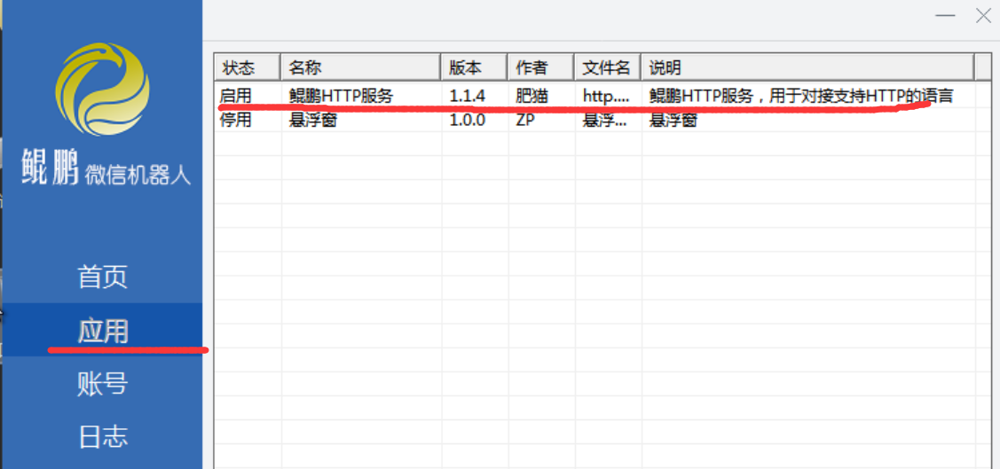
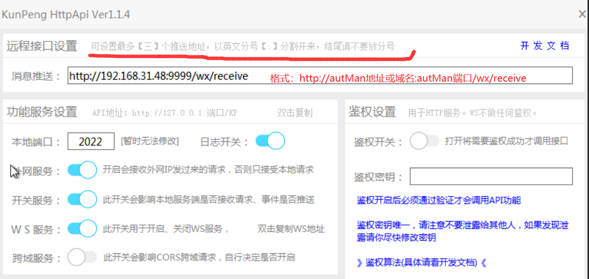
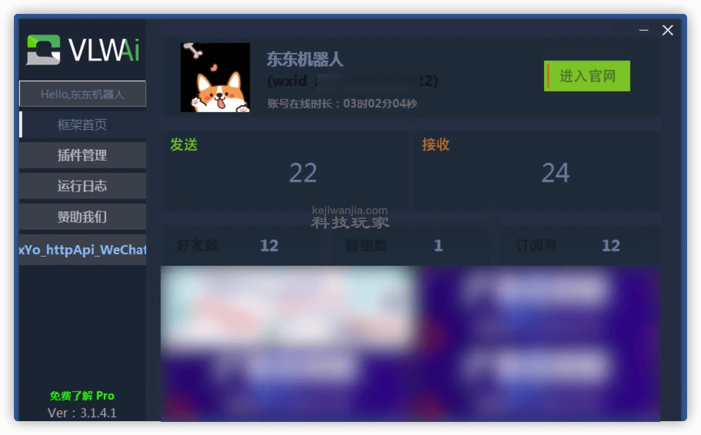
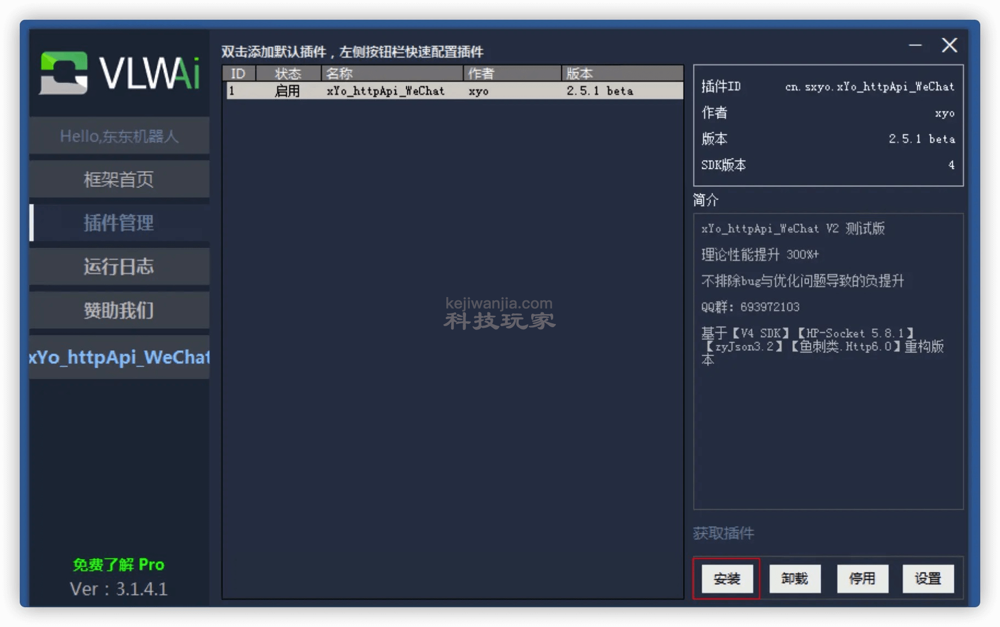
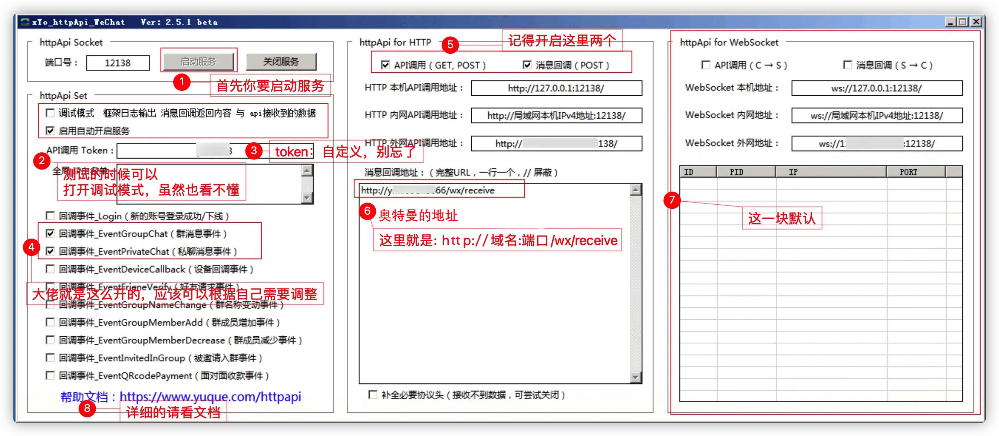
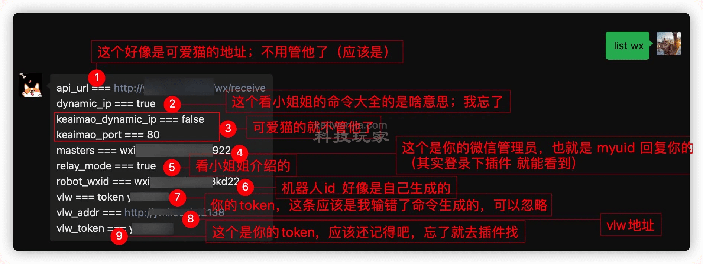

本页面目录
说明
微信框架目前可选方案有My、鲲鹏微信、可爱猫、vlw等，都运行在windows平台上。
1.My对接
具体过程与vlw的对接一样，见vlw对接
2.鲲鹏微信的对接
鲲鹏微信的qq群号为1146130363，可在群里获取最新的文件。autMan群文件里也有鲲鹏微信的安装包，包括3个软件：
1.鲲鹏机器人软件
2.http插件
3.微信安装包（此处为要求的版本）
1.将http插件文件http.kp.dll拖到app文件夹内，双击启动鲲鹏机器人，右键启用“鲲鹏http服务”
2.双击“鲲鹏http服务”设置参数
3.配置autMan对接
1.设置对接模式指令：set wx mode kp，
2.设置鲲鹏微信的地址：set wx kp_addr http://鲲鹏机器人ip地址或域名:2022
4.排错要点
1.设置完参数后最好重启一下机器人
2.检查autMan运行控制台（./autMan -t启动）是否能收到微信消息，没收到说明鲲鹏微信的消息未到达autMan
3.检查鲲鹏微信的主机防火墙是否开启了8022的端口
4.autMan主机和鲲鹏微信主机逻辑上能否相互访问
3.vlw对接
- win 平台的系统（测试win7可行）
- vlw(http://a.vlmai.cn/)框架。(群文件夹vlw下载)
- cn.sxyo.xYo_httpApi_WeChat.vlw.dl插件（群文件夹vlw下载)
- 电脑上安装要求版本的微信，（群文件夹vlw下载）
1.vlw的配置
- 首先给他安个家，建议英文或拼音目录
- 把插件放到plugin目录下
2.登录微信
3.启用插件
4.插件设置
5.autMan设置

set wx dynamic_ip true ##设置动态网络地址，适用于家庭宽带而可爱猫在云服务器的情况下（根据自己情况，我是不是应该关了它）## 对应第二条
set wx relay_mode true ##设置图片转发模式，否则可能会出现此图片来自xx未经允许不得使用的提示
set wx vlw_addr http://域名:端口 ##你的vlw框架的域名+端口；服务器就ip+端口 #对应第八条
set wx vlw_token 你的token ##你设置的token ##对应第九条6.排错
- 首先访问你的机器人地址，看是否正常
- 然后是访问vlw框架地址，看是否正常
- 给机器人发送 list wx 指令查看设置
- 手动启动机器人./autMan -t，然后微信发送命令，看看终端输出